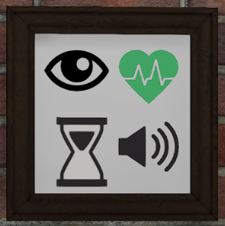

VR Interveiw Simulator
InterVeiwR is a program created in Unity using C#. I conducted the project at Western Washington University with two professors and four other students. I was in charge of finding the character models for the interviewers as well as creating realistic facial and body animations. I also programmed in a live feedback system that would give the user social queues in real time. It would provide them feedback for different elements including: sufficient eye contact, speaking volume, response length, and heart rate increase. These indicators all showed up in a picture frame inside the simulation.
The program’s purpose is to help individuals with autism spectrum disorder (ASD) prepare for job interviews. Appoxametly 90% of individuals with ASD are unemployed or underemployed. Low employment levels are largely due to the struggles many individuals with ASD experience during job interviews. This project provides an opportunity for individuals to get interview practice from the comfort of their own home.The program’s purpose is to help individuals with autism spectrum disorder (ASD) prepare for job interviews. Appoxametly 90% of individuals with ASD are unemployed or underemployed. Low employment levels are largely due to the struggles many individuals with ASD experience during job interviews. This project provides an opportunity for individuals to get interview practice from the comfort of their own home.
This project is ongoing at Western Washington University’s NEAT lab, and as a result I cannot share the code for this project.